Introduction to reproducible data analysis with R and Quarto - Day II
KLI Seminar 2023
Schedule
DAY 2
09.00-9.30: Recap from yesterday, tidystats and the groundhog package
09.30-10.30: Publishing Reproducible Data Analysis Scripts
- Sharing your scripts and data
- Publishing through GitHub, RPubs; integration with osf
11.00-12.30: Hands-on Practice (with break)
- Structure, code, and version control: Work on your data analysis project
12.30-13.00: Closing Remarks
- Recap of the workshop
- Q&A session
Recap, dependencies, and the groundhog package
Packages and package dependecies

What happened and how to avoid it
- The
custom_functions.Rfile was pretty massive and needed many R packages that many of you had not installed
- One way around that: deleting all functions that are not needed and install relevant packages for the remaining (what we did yesterday)
Another solution: using the dependencies package
… however, that does not work if you are using different versions of packages!
The groundhog package
- Different versions of a package may produce different results or are different in terms of functionality
- When sharing scripts/code or when collaborating with others on a project, using the same version of a package becomes crucial
- The
groundhogpackage in R is used for managing the package dependencies in an R script with specific requirements for package versions
- The
groundhogpackage allows users to load packages from a specific date in the past
- Instead of loading the most recent (or installed) version of a package with the
library()function, users can load a version of the package that was current as of a specific date
The groundhog package
- With groundhog, the only thing you need to change to make your R code reproducible is:
| Instead of: | library(pkg) |
| Do this: | groundhog.library(pkg, date) |
The groundhog package
For your current scripts
pretty insightful article on the groundhog package
Tidystats
Learn how to use it here
Version control
What is version control?
- Version control, also known as source control, is the practice of tracking and managing changes to software code
- Version control systems are software tools that help software teams manage changes to source code over time
The benefits of version control
- A complete long-term change history of every file
- Branching and merging
- Ability to make your work more reproducible
- Collaboration through platforms hosting versions of your code
What is Git?
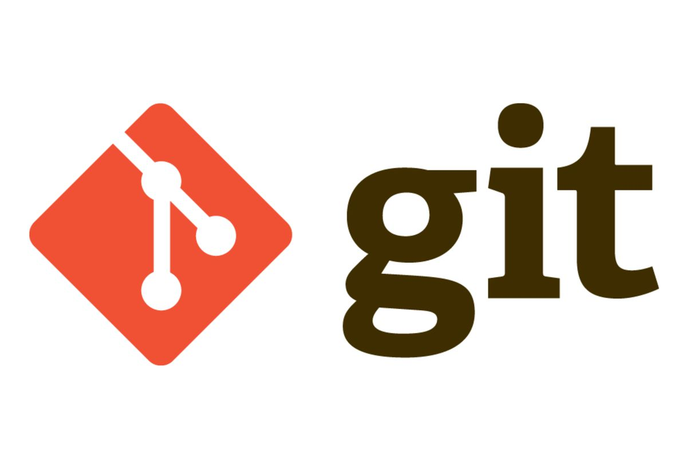- Git is a software that keeps track of versions of a set of files
- It is local to you; the records are kept on your computer
What is GitHub?

- a hosting service that can keep the records
- it is remote to you, like Dropbox
- GitHub is specifically structured to keep records with Git
Getting started with Git
1. Check that Git is installed
- In the terminal (in RStudio), type
2. Generate token
- Go to https://github.com/settings/tokens and click Generate token
3. Set credentials from within RStudio
4. Tell Git who you are
GitHub Knowledge Base
GitHub Knowledge Base
GitHub Knowledge Base
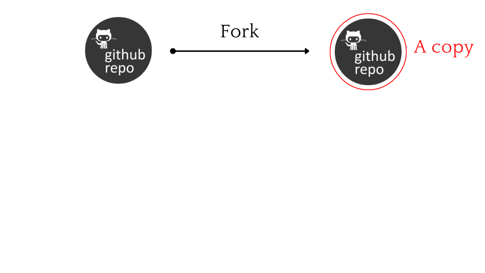GitHub Knowledge Base
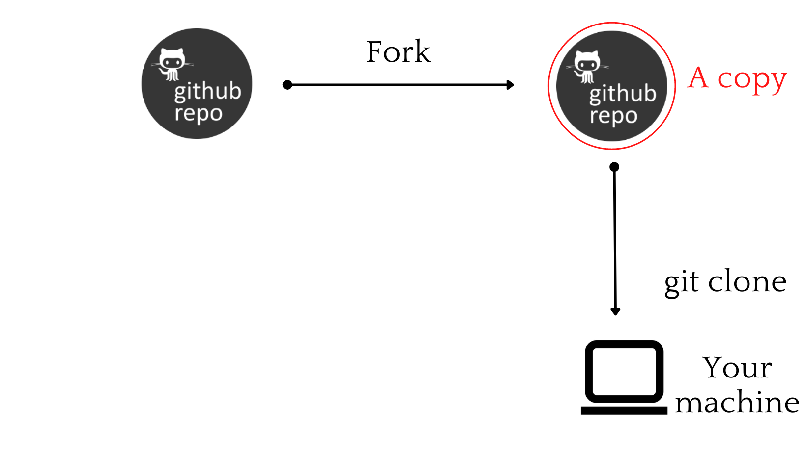GitHub Knowledge Base
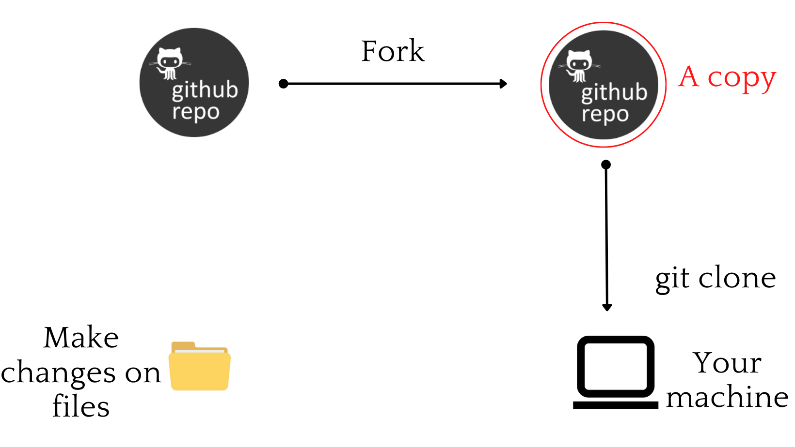GitHub Knowledge Base
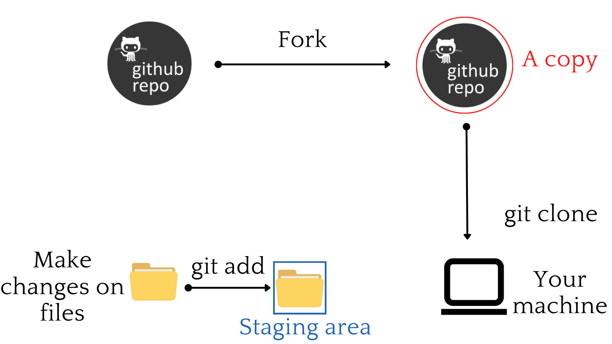GitHub Knowledge Base
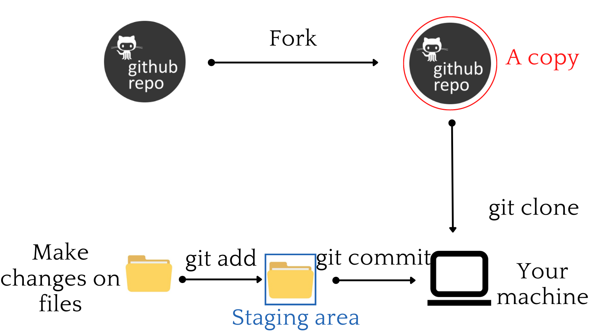GitHub Knowledge Base
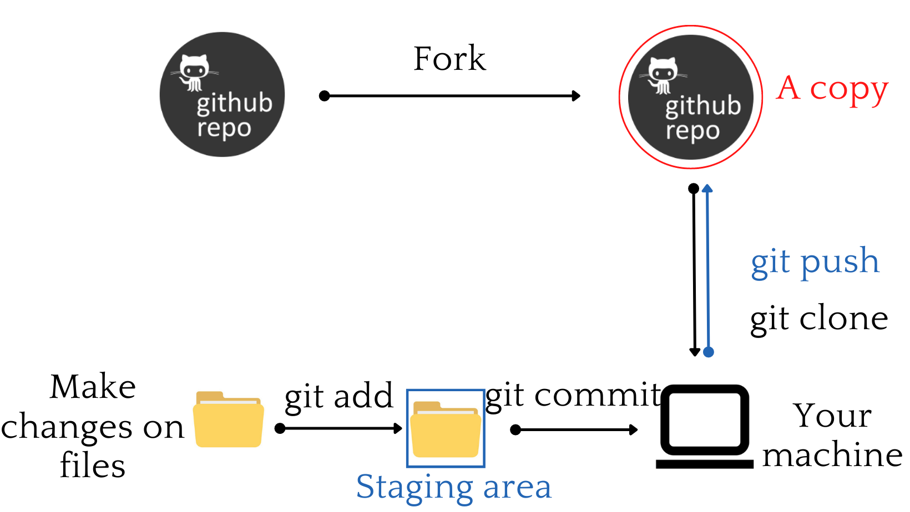GitHub Knowledge Base
| Commands | Operations |
|---|---|
git init <directory> |
Create empty Git repo in specified directory |
git clone <repository> |
Clone a repository located at |
git config user.name <username> |
Define author name to be used for all commits in current repository |
git add <directory> |
Stage all changes in |
GitHub Knowledge Base
| Commands | Operations |
|---|---|
git commit -m <"message"> |
Commit the staged snapshot, but instead of launching a text editor, use <“message”> as the commit message |
git status |
List which files are staged, unstaged, and untracked |
git log |
Display the entire commit history using the default format |
GitHub Knowledge Base
| Commands | Operations |
|---|---|
git pull <remote> |
Fetch the specified remote’s copy of current branch and immediately merge it into the local copy |
git push <remote> <branch> |
Upload local repository content to a remote repository |
GitHub Knowledge Base
| Pull requests |
|
| Issues |
|
The version control workflow with Git and GitHub
On GitHub
- Go to GitHub and create a new repository
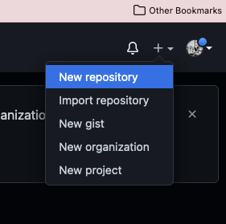
- Fill in some info, create a public repository 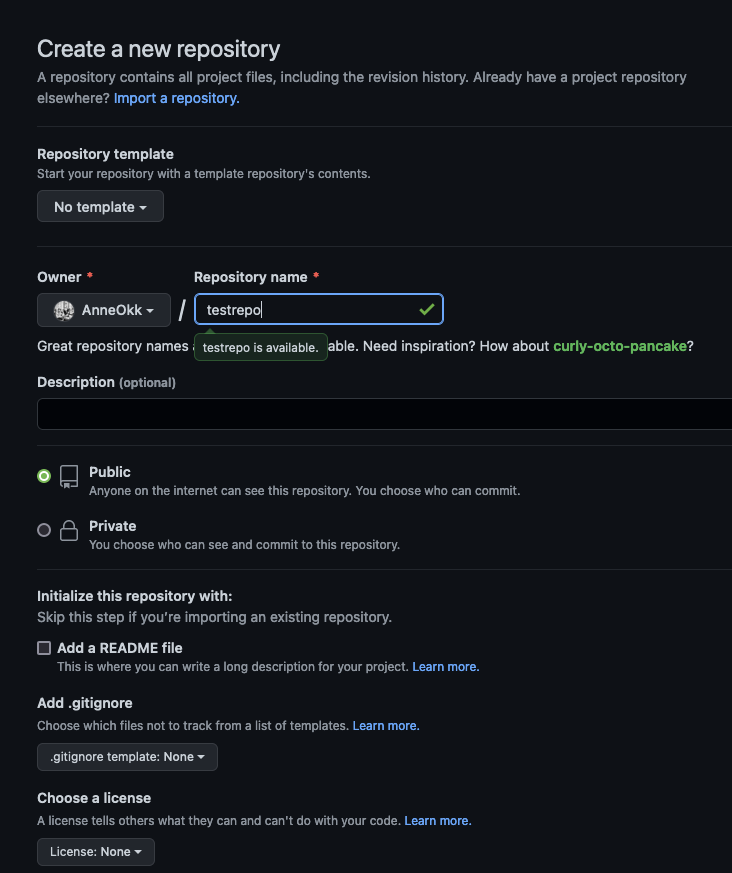
- Follow the steps in Option 1: “…create a new repository on the command line”
In the terminal
- In the terminal 📱, navigate to your Quarto project folder:
- stage all the content in that folder to be added:
- connect local repo to the remote repo. Substitute the link with your repo URL!
🎈 The pushed files should appear in your GitHub repository 🎈
Your Turn (45 min)
Poll: What would you like to focus on in the exercise?
1) Focus on R Project structure
2) Focus on code improvement
3) Focus on version control with Git and GitHub
Your Turn (45 min)
[Get Git and GitHub running]
(Re)structure your project based on yesterday’s instructions
Connect your local R project folder with a GitHub repository
Change some of the content in R, save, and then push the changes to GitHub
Connecting osf to GitHub
Connecting osf to GitHub
- Create your osf project
- Enable GitHub in Add-ons
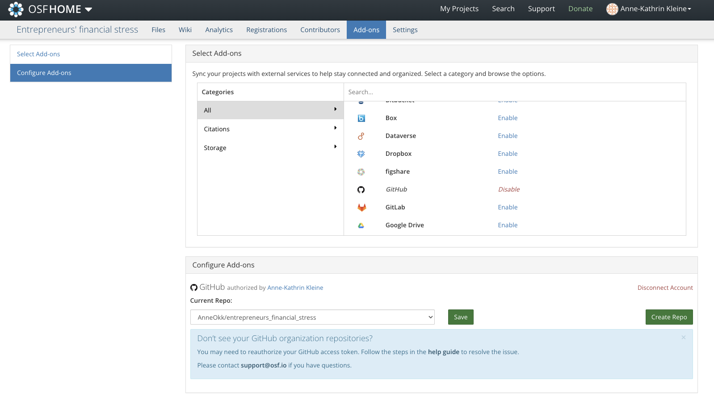
- Import GitHub Account
4. Select Repo
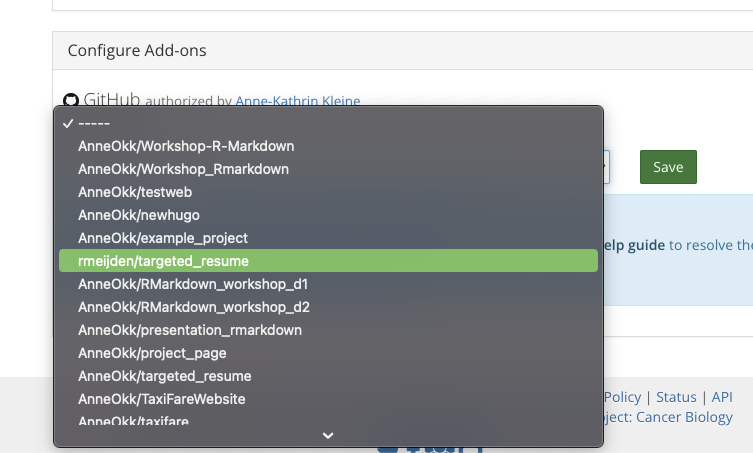🎊 Yey, you’re all set to connect your GitHub content to osf! 🎊
Extra: .gitignore
Create a .gitignore file in your project folder
Inside the .gitignore file
.Rproj.user
.Rhistory
.RData
# Data preparation folder
/Data_prep
# Some folders
/Manuscript_cache
/Tables
/Manuscript_files
/OLD
# Manuscript file
Manuscript.docx…And there is so much more!
You will get the chance to work on your own data analysis project
For this, you will have ~ 30 minutes to prepare the folder structure tomorrow
You may use either the example material or work on your own projects